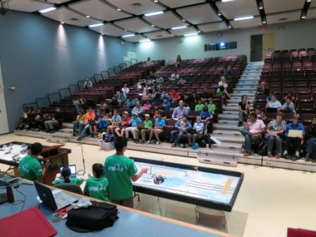
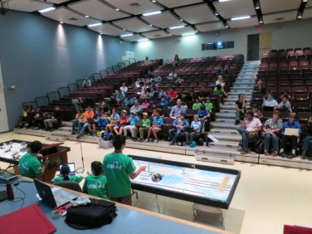

On Saturday, September 27th, 2017, Ctrl-Z presented to many new and returning teams at Bayview Glen School’s FLL World Class Kick-off and Training Event. There, we refreshed and helped improve many people’s skills on building, programming, and presenting. We shared various concepts, from introductory to advanced, to help other teams make the best of this year’s season, while at the same time brushing up on our own presentation skills. By sacrificing the time we could have been working on our robot to do this, we were giving back to the FLL community that we have learned so many skills participating in.
 



On Saturday, October 4th, 2014, during Fire Prevention Week 2014, Ctrl-Z visited an open house of the Toronto Fire Services. We were invited to present our research project from last year’s season, with the theme being natural disasters. Our solution was a gyroscopic candle holder that would always stay upright, and therefore help to prevent fires when candles are needed, especially during ice-storms. By presenting our robot and project, as well as demonstrating the potential and benefits of joining FLL, we wowed many firefighters and visitors, who came to learn more about fire safety. Here is a link to the event on Link to First Robotic Canada Facebook:


On Saturday, November 22nd, 2014, Ctrl-Z spent the morning talking about FLL, as well showing our robot and Rhythm Ramp to countless people at Bayview Glen School’s open house. People were amazed at what we could accomplish as a team. Additionally, around 20 attendees of a Cohort 21 educational conference showed up; we showed how much we learn by participating in FLL by presenting our project, solution, and presentation skills.


On Saturday, November 29th, 2014, Ctrl-Z volunteered at the Westview Centennial Secondary School regional qualifier. We helped out as score keepers, table reset volunteers, and referees. This not only enabled us to gain a better understanding of the rules, but also to appreciate the roles of volunteers at our tournament. As well, it was another chance to give back to the FLL community that has done so much for us.